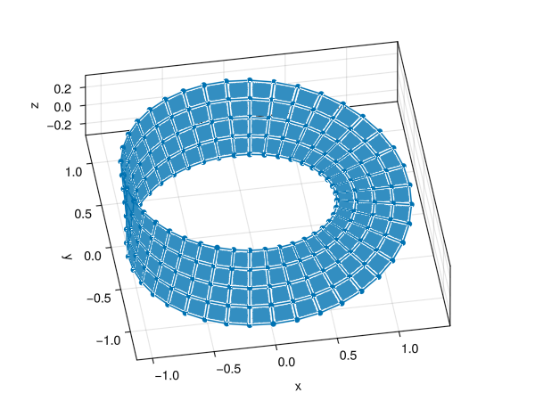
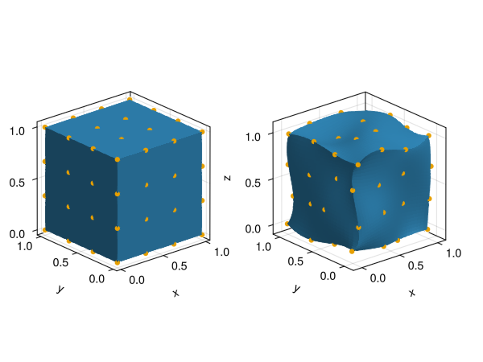
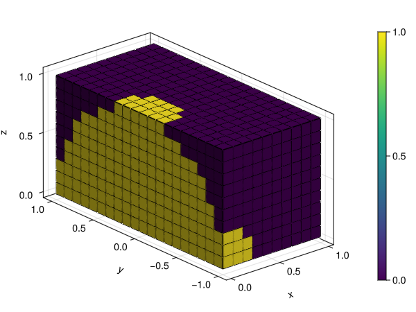

Mesh geometry
A mesh object in GalerkinToolkit contains all geometrical information needed in a finite element (FE) computation. This includes the discretization of computational domains as well as data to impose different types of boundary conditions. Meshes are often generated with external tools and then transformed into GalerkinToolkit objects with helper functions such as mesh_from_gmsh, see the Page about Mesh generation for more details. In this page, we assume that we have already created a mesh object and will discuss its geometrical representation and in particular:
- our math definition of a mesh,
- reference domains and spaces,
- physical faces and coordinate maps,
- face, node, and reference ids, and
- face groups.
Definition
A mesh $M$ in GalerkinToolkit is defined as set of physical faces embedded in the Euclidean space $\mathbb{R}^D$, with $D$ often being $D=1,2,3$. A physical face is defined in terms of a reference domain and a reference space as detailed later below. In the API, a mesh $M$ is represented with a mesh object M, whose type is a subtype of AbstractMesh. Even though our math notation defines a mesh $M$ as a set, a mesh object M::AbstractMesh has not the API of a set, but an API providing the information encoding the set of faces $M$. There is a one-to-one relation between the mathematical mesh $M$ and the API mesh M and we often refer to them simply as "a mesh". The same is true for other math definitions and their corresponding API.
A face $F\in M$ in a mesh is represented in the code with an object F::AbstractMeshFace. Given M::AbstractMesh, function GT.each_face(M,d) creates an iterator used to traverse all faces of dimensions d in mesh M. Using this iterator, faces can be accessed with the Julia loop syntax.
for F in GT.each_face(M,d)
# F isa AbstractMeshFace
endDimensions
A face $F\in M$ in a mesh is an open $d$-dimensional manifold embedded in the Euclidean space $\mathbb{R}^D$. We call $D$ the number of ambient dimensions of the mesh $M$ and of faces $F\in M$, and $d$ is the number of dimensions of face $F$, which might be $d=0,\ldots,D$. We use $d(X)$ and $D(X)$ to denote the number of dimensions and ambient dimensions of an object $X$ and define the number of co-dimensions of $X$ as $D(X)-d(X)$. Since a mesh might contain faces of different dimensions, we define the number of dimensions of a mesh $M$ as the maximum number of dimensions of their faces, $d(M):=\max_{F\in M} d(F)$. In the API, the number of dimensions, ambient dimensions, and co-dimensions are obtained with num_dims(X), num_ambient_dims(X), and num_codims(X) respectively for an instance X::AbstractMeshFace or X::AbstractMesh.
This is some extra notation that we often use in the library. We call a $d$-face to a face of $d$ dimensions. We call vertices, edges, surfaces, and volumes to faces of 0, 1, 2, and 3 dimensions respectively. We call chain to a mesh, whose faces are all of the same dimension. The next figure shows a two-dimensional mesh embedded in a three-dimensional space. This mesh contains vertices, edges, and surfaces, but not volumes. This mesh is not a chain, but a face complex (see section Mesh topology).

Figure: Visualization of the faces in the mesh of a Möbius strip. We shrink the mesh faces to illustrate that faces are open sets. Otherwise faces of hider dimensions would hide faces of lower dimensions in the figure.
#Code used to generate the figure
import GalerkinToolkit as GT
import GLMakie as Makie
cells = (4,40)
mesh = GT.moebius_strip(cells;width=0.6)
fig = Makie.Figure()
elevation = 0.24π
azimuth = -0.55π
aspect = :data
ax = Makie.Axis3(fig[1,1];aspect,elevation,azimuth)
shrink = 0.8
shading = Makie.NoShading
GT.makie_surfaces!(mesh;shrink,shading,dim=2)
GT.makie_edges!(mesh;shrink,dim=1)
GT.makie_vertices!(mesh;shrink,dim=0)Face ids
We assign a unique integer, called the face id $\text{id}(F)$, to each face $F\in M$ of a given dimension $d$ . Face ids are assigned per dimension (two faces of different dimension might have the same id). Thus, a face is uniquely identified by its face id and its dimension $d$. The face ids are arbitrary as long as they are consecutive integers starting by one. In the API, num_faces(M,d) returns the number of d-faces and faces(M,d) is the range 1:num_faces(M,d) containing all face ids in dimension d. There is a one-to-one relation between face objects and face ids. For a face object F::AbstractMeshFace, F_id=id(F) is the face id of F and F=each_face(M,d)[F_id] is the face F for a face id F_id::Integer. We often refer to face objects F and face ids F_id simply as "a face" since they are equivalent. In the API, the same operation can be done often in two different ways, one using face ids (integers) and another using face objects.
Node ids
Like in many other FE codes, the node coordinates of a face $F\in M$ are encoded using a vector of node coordinates $x(M)$ for the mesh $M$ and the node ids $n(F)$ of the face $F$. In this setup, the node coordinates of a face $x(F)$ are computed as $[x(F)]_l := [x(M)]_g\in\mathbb{R}^D$ with $g = [n(F)]_l$ for $l=1,\ldots,|n(F)|$. The vector $n(F)$ is often called the local-to-global (index) map or the face connectivity. We call them the face node ids. The value $g$ is called the global node id associated with the face-local (or simply local) node id $l$ in face $F$.
In the API, the vector of node coordinates of a mesh is accessed with node_coordinates(M) for M::AbstractMesh. The length of this vector is num_nodes(M) and nodes(M) is the range 1:num_nodes(M) containing all possible node ids. For a given d, we collect the node ids of all d-faces in a mesh M in the vector returned by face_nodes(M,d). The node ids of a face with id F_id::Integer and dimension d are accessed with face_nodes(M,d)[F_id]. The coordinates of the local node l in face F_id are then computed by indexing the mesh coordinates with the global node id g, node_coordinates(M)[g] with g = face_nodes(M,d)[F_id][l]. The vector face_nodes(M,d) is a long vector of small vectors of integers with possibly different lengths. It is often represented using a PartitionedArrays.JaggedArray object that uses continuous linear memory for performance.
It is also possible to access node ids and node coordinates from a face object F::AbstractMeshFace as nodes(F) and node_coordinates(F) respectively. Note that nodes(F) and face_nodes(M,num_dims(F))[id(F)] are equivalent.
Reference ids
Each physical face $F\in M$ in a mesh is defined by means of a reference FE space $\hat V(F)$. Several faces often share the same reference space and often all faces of the same dimensions share the same reference space. For each dimension d, we collect the unique reference spaces of faces of dimension d in a tuple. This tuple is returned by reference_spaces(M,d) for a mesh object M::AbstractMesh.
The reference space assigned to a face is then obtained as reference_spaces(M,d)[r], where r is called the reference id of the face. The reference id is obtained from a face id F_id::Integer, by indexing the vector face_reference_id(M,d), namely r = face_reference_id(M,d)[F_id]. It can also be obtained from a face object F::AbstractMeshFace with r=reference_id(F), and the corresponding reference space with reference_space(F). Note that reference_id(F) and face_reference_id(M,num_dims(F))[id(F)] are equivalent.
The notion of reference id is introduced since different face typologies such as simplices and hyper-cubes might be in the same mesh. If all $d$-faces are topologically equivalent (which is often the case), there is only one reference space for all $d$-faces and their reference id is one.
Reference spaces
The reference space $\hat V(F)$ of a face $F\in M$ is is a scalar-valued (possibly high-order) Lagrange FE space defined on the reference domain $\hat \Omega(F)$. From this space, one can obtain a vector of (high-order) node coordinates $x(\hat V(F))$ and a vector of shape functions $s(\hat V(F))$.
In the code, the reference spaces in reference_spaces(M,d) are of a types that specializes the AbstractSpace interface. The AbstractSpace interface is detailed in section Interpolation. In this page, we only need to consider the vector of node coordinates node_coordinates(Vref) and the vector of scalar shape functions, shape_functions(Vref) for an object Vref::AbstractSpace. Each function in shape_functions(Vref) is evaluated at a point x::AbstractVector (often x::SVector), and returns a scalar value s::Real.
One can get a reference spaces from a mesh object as shown above or created from scratch with function lagrange_space. E.g., Vref = lagrange_space(Ωref,order) creates a reference space of order order on the reference domain Ωref.
Reference domains
A reference domain $\hat \Omega$ is a $d$-dimensional polytope embedded in the Euclidian space $\mathbb{R}^d$. In particular, $\hat \Omega$ is a segment, polygon, and a polyhedron for $d=1,2,3$ respectively. For $d=0$, we define a reference domain $\hat \Omega:=\{v\}$ as a set containing the only point $v\in\mathbb{R}^0$. For $d>0$. We define the boundary $\partial\hat \Omega$ of a reference domain $\hat \Omega$ as the union $\partial\hat \Omega := U_{F\in C} \bar F$, where $C$ is a chain of faces of dimension $d-1$ and $\bar F$ is the closure of a face $F$. E.g., the boundary of a segment is the union of two vertices. The boundary of a square is the union of four segments, and the boundary of a cube is the union of four squares. Assuming that $\partial\hat \Omega$ is closed, we define the reference domain $\hat \Omega$ as the open bounded subset of $\mathbb{R}^d$ with boundary $\partial\hat \Omega$. i.e., $\hat \Omega$ is the space "inside" $\partial\hat \Omega$. In the API, reference domains are often built as Ωref = unit_n_cube(Val(d)) or Ωref = unit_simplex(Val(d)) that create a unit hypercube or a unit simplex of d dimensions respectively.
Given a physical face $F\in M$, we call $\hat\Omega(F)$ the reference domain associated with it, and $C(\hat \Omega)$ the chain used to define $\hat \Omega$. In the API, one can get the reference domain from a face object F::AbstractMeshFace as Ωref=reference_domain(F) or from a reference space Ωref = domain(Vref) with Vref::AbstractSpace. The reference domain is also obtained from a face with id F_id::Integer and dimension d, by getting the reference space Vref=reference_spaces(M,d)[r] with r=face_reference_id(M,d)[F_id] and then calling Ωref = domain(Vref).
Physical faces
A physical face $F\in M$ is defined as the image $\phi^F(\hat \Omega(F))$ of its reference domain $\hat \Omega(F)$ via a map $\phi^F: \mathbb{R}^d \rightarrow \mathbb{R}^D$, where $d$ is the dimension of $F$ and $D$ is the ambient dimension of the mesh, see next Figure. This map is called the coordinate map and it is defined using the reference space $\hat V(F)$ and the node coordinates $x(F)$ of the face $F$.
The coordinate map for a face $F$ is defined as follows:
\[\phi^F(\hat x) := \sum_{n=1}^{N^F} x^F_n s^{\hat V}_n(\hat x),\]
where $N^F:=|s(\hat V(F))|$ is the number of nodes of $F$ and $x^F_n:=[x(F)]_n$, and $s^{\hat V }_n:=s(\hat V(F))$. This map transforms the node coordinates in the reference space $x(\hat V(F))$ into the physical node coordinates of a face $x(F)$ (see the orange dots in next figure). The map also transforms any other point in the reference domain, leading to potentially curved faces in the physical face.
From a physical face F::AbstractMeshFace, we can obtain its coordinate map and additional geometrical information such as is barycenter and its diameter, namely coordinate_map(F), barycenter(F) and dimameter(F).

Figure: Effect of mapping a reference cube with a third order coordinate map. Orange dots illustrate the nodes before and after the map.
#Code used to generate the figure
import GalerkinToolkit as GT
import GLMakie as Makie
import StaticArrays
order = 3
Ωref = GT.unit_n_cube(Val(3))
Mref = GT.mesh(Ωref)
Vref = GT.lagrange_space(Ωref,order)
xref = GT.node_coordinates(Vref)
T = StaticArrays.SVector{3,Float64}
x = map(y->y + 0.1*(rand(T) .- 0.5) ,xref)
node_coordinates = x
N = GT.num_nodes(Vref)
face_nodes = [collect(1:N)]
reference_spaces = (Vref,)
M = GT.create_chain(;
node_coordinates,
face_nodes,
reference_spaces,
)
F = GT.domain(M,3)
fig = Makie.Figure()
aspect = :data
ax = Makie.Axis3(fig[1,1];aspect)
GT.makie_surfaces!(ax,Mref)
Makie.scatter!(xref;color=Makie.Cycled(2))
ax = Makie.Axis3(fig[1,2];aspect)
refinement = 30
GT.makie_surfaces!(ax,F;refinement)
Makie.scatter!(x;color=Makie.Cycled(2))Face groups
For a given $d$, we call a face group to a subset $G\subset M$ of the $d$-faces in a mesh $M$. A mesh is typically endowed with several of these groups to identify particular faces for modeling purposes, e.g., to impose boundary conditions, or define position-dependent material properties. Each group is given a group name, which identifies the group.
In the API, group_faces(M,d) provides access to the face groups for faces of dimension d. It is a Julia Dict. The keys are String objects for the group names, and the value group_faces(M,d)[group] is a vector of integers containing the face ids for faces inside the group with name name. The keys of this dictionary can also be accessed as group_names(M,d). Face groups are defined per dimension and it is accepted to have the same group name in two or more dimensions. It is also possible to add new groups by adding new key-value pairs to this dictionary.
Example
We illustrate how a new face group is added to an existing mesh. We create a new group with all 2-faces whose center is inside the ball centered at the origin and radius 1. The example uses part of the API described above to find the faces to be added in the group. We color code faces inside the group with value 1, and outside with value 0.
import GalerkinToolkit as GT
import GLMakie as Makie
using LinearAlgebra
#Create a Cartesian mesh mesh
domain = (0,1,-1,1,0,1)
cells = (10,20,10)
mesh = GT.cartesian_mesh(domain,cells)
#Find faces in new group
d = 3
mesh_faces = GT.each_face(mesh,d)
new_group_faces = findall(mesh_faces) do F
x = GT.barycenter(F)
norm(x) < 1
end
#Add new group to mesh
GT.group_faces(mesh,d)["foo"] = new_group_faces
#Visualize
color = GT.FaceColor("foo")
fig = Makie.Figure()
aspect = :data
ax = Makie.Axis3(fig[1,1];aspect)
surfs = GT.makie_surfaces!(ax,mesh;dim=d,color)
GT.makie_edges!(ax,mesh;color=:black)
Makie.Colorbar(fig[1,2],surfs)
Summary
We discussed how computational meshes are defined in GalerkinToolkit and the core API of the AbstractMesh interface. The following table provides an overview of the math notation and corresponding API introduced in this page.
| Concept | Notation | API |
|---|---|---|
| Mesh | $M$ | M::AbstractMesh |
| Physical face | $F$ | F::AbstractMeshFace |
| Face iteration | $F\in M$ | each_face(M) |
| Dimensions | $d(x)$ | num_dims(x) |
| Ambient dimensions | $D(x)$ | num_ambient_dims(x) |
| Co-dimensions | $D(x)-d(x)$ | num_codims(x) |
| Face id | $\text{id}(F)$ | id(F) |
| Node coordinates | $x(A)$ | node_coordinates(A) |
| Node ids | $n(A)$ | nodes(A) |
| Number of nodes | $ |n(A)| $ | num_nodes(A) |
| Reference id | r=reference_id(F) | |
| Reference space | $\hat V(F)$ | Vref=reference_space(F) |
| Shape functions | $s(V)$ | shape_functions(Vref) |
| Reference domain | $\hat \Omega(F)$ | reference_domain(F) |
| Chain | $C(\hat\Omega)$ | |
| Face groups | group_faces(M,d) | |
| Group names | group_names(M,d) |
This page was generated using Literate.jl.